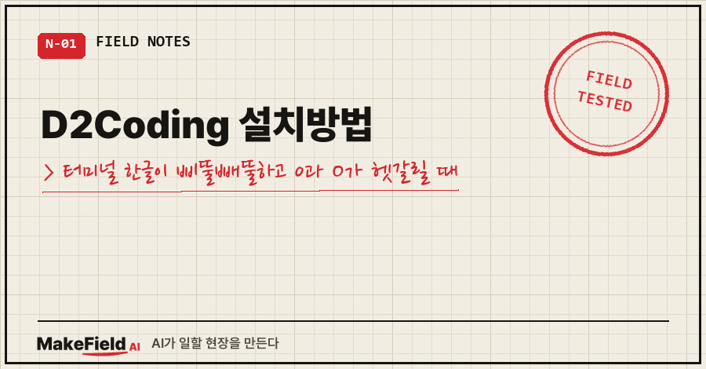
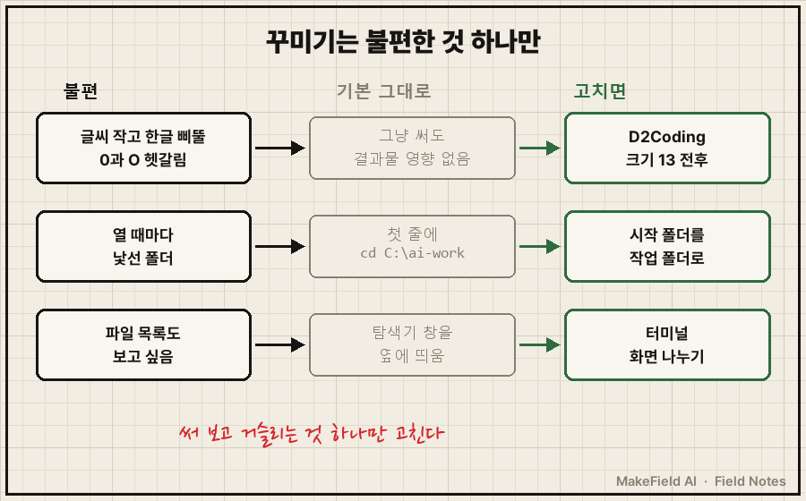
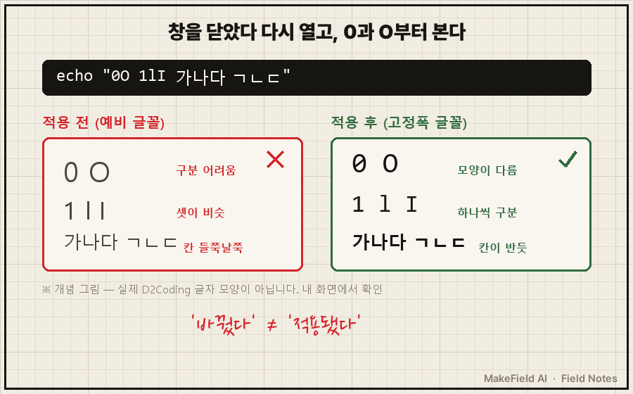
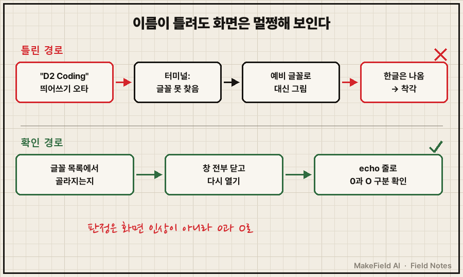

터미널을 처음 열면 검은 바탕에 작은 회색 글씨가 깜빡여요.
한글은 삐뚤빼뚤하고, 줄은 다닥다닥 붙어 있고,
0인지 O인지 한참 들여다보게 됩니다.
답부터 적을게요. 터미널 화면은 기본 그대로 써도 결과물에는 아무 영향이 없어요. 글씨가 불편할 때만 네이버가 무료로 공개한 한글 고정폭 글꼴 D2Coding을 설치하고, 터미널 글꼴을 D2Coding·크기 13 전후로 바꾸면 됩니다. 단, 글꼴 이름을 한 글자만 틀려도 터미널이 다른 글꼴로 대신 그려서 바뀐 줄 착각하기 쉬워요. 그래서 바꾼 뒤엔 창을 닫았다 열고 0과 O부터 확인합니다.
지난 편에서 GPT·Claude·Gemini 셋 중 쓸 AI를 골랐어요. 이번 편은 그 AI를 띄울 검은 화면을, 딱 불편한 만큼만 손봅니다.
제조 현장에서 자동화 일을 15년 하고, 퇴근 뒤엔 제 PC에서 AI 도구를 굴리는 사람이에요. 이번 편은 그 PC에서 실제로 쓰는 터미널 기준이에요.
1. 터미널 화면, 꾸며야 쓸 수 있나요?
아니요, 꾸미지 않아도 됩니다. 많은 분이 명령어가 어려워서가 아니라 화면이 안 읽혀서 그만두는데, 그건 글꼴 하나로 풀리는 문제예요. 꾸미기는 불편이 생겼을 때 그 하나만 고치면 됩니다.
그래서 이번 편에서 만드는 건 거창한 설정이 아니라 이 짧은 목록 하나예요.
| 불편 | 기본 그대로라면 | 고치고 싶으면 |
|---|---|---|
| 글씨가 작고 한글이 삐뚤빼뚤, 0과 O가 헷갈림 | 그냥 써도 결과물엔 영향 없음 | 한글 고정폭 글꼴 D2Coding + 크기 13 전후 |
| 열 때마다 낯선 폴더에서 시작 | 첫 줄에 cd C:\ai-work | 시작 폴더를 작업 폴더로 지정 |
| 대화하면서 파일 목록도 보고 싶음 | 탐색기 창을 옆에 띄움 | 터미널 화면 나누기 |

순서가 중요해요. 저는 꾸미기 전에 일단 기본 화면으로 AI와 첫 대화부터 해 보라고 권합니다. 써 보면 거슬리는 게 하나쯤 생기고, 그게 고칠 대상이에요. 미리 다 꾸며 두면 안 쓰는 설정만 쌓이거든요. 여러분은 지금 그 화면에서 뭐가 제일 거슬리세요? 그 하나가 오늘 고칠 대상이에요.
이건 제가 겪은 일이기도 해요. 터미널을 열 때마다 최근 작업 목록이 뜨게 꾸며 놨더니, 창이 뜨는 데 11.1초가 걸렸습니다. 정작 그 목록은 보지도 않았고요. 빼고 나니 1.3초가 됐어요(이 얘기는 클로드 코드 이어하기 편에 자세히 적었어요).
2. D2Coding 설치방법 — 3단계
D2Coding은 네이버가 깃허브에 무료로 공개한 한글 고정폭 글꼴이에요(SIL 오픈 폰트 라이선스). 글자마다 같은 폭을 쓰는 코딩용 글꼴이라 한글·영문·숫자 줄이 반듯하게 맞아요. 0과 O가 구분되는지는 아래 3단계에서 직접 확인합니다.
1단계. 내려받아 설치합니다
- 깃허브
naver/d2codingfont페이지에서 릴리스(Releases) 압축 파일이나fonts/ttf폴더의 TTF를 내려받아요. - 압축을 풀고
.ttf파일을 더블클릭 → 창 위쪽 설치 버튼. - 이미 옛 버전이 깔려 있으면 먼저 지우고 설치하라고 공식 안내에 적혀 있어요(2026-11-15 README 확인).
2단계. 메뉴를 뒤지지 말고 AI에게 물어봅니다
터미널 설정 메뉴 이름은 버전마다 조금씩 달라요. 외울 필요 없이, 쓰고 있는 터미널 이름을 넣어서 이렇게 물어보면 됩니다.
나는 윈도우 기본 터미널(Windows Terminal)을 써.
한글이 잘 읽히게 글꼴을 D2Coding으로, 크기를 13으로 바꾸는 법을
메뉴 순서대로 알려줘.시작 폴더도 같은 방식이에요.
터미널을 열면 C:\ai-work 폴더에서 바로 시작하게 하고 싶어.
방법을 알려줘.이 질문은 클로드 코드에 해도 되고, GPT의 Codex CLI나 구글 Gemini CLI(지금 이름은 Antigravity CLI)에 해도 똑같이 답해 줍니다. 도구가 달라도 "내 환경을 말하고, 순서대로 알려 달라"는 방식은 그대로예요.
3단계. 창을 전부 닫고 다시 열어 눈으로 확인합니다
"바꿨다"와 "적용됐다"는 달라요. 터미널 창을 전부 닫았다 다시 연 다음, 아래 한 줄을 쳐 보세요.
echo "0O 1lI 가나다 ㄱㄴㄷ"| 확인 | 적용 안 됨 | 적용됨 |
|---|---|---|
| 0과 O | 거의 같은 동그라미 | 모양이 확실히 다름 |
| 1, l, I | 셋이 비슷 | 하나씩 구분 |
| 한글 줄 | 들쭉날쭉 | 칸이 반듯 |

3. 여기서 이렇게 틀립니다 — 글꼴 이름이 틀렸는데 화면은 멀쩡해 보인다
터미널은 설정한 글꼴을 못 찾아도 대개 멈추지 않고, 다른 예비 글꼴로 대신 그려요. 한글도 그럭저럭 나오니까 "바뀌었네" 하고 넘어가기 딱 좋습니다.
예를 들어 설정 파일에 이름을 이렇게 적었다고 해 볼게요.
"font": { "face": "D2 Coding" } ← 띄어쓰기 하나 때문에 못 찾음
"font": { "face": "D2Coding" } ← 설치된 이름 그대로윈도우 터미널 개발 저장소에도, 설정한 글꼴이 없을 때 다른 글꼴로 조용히 대신 그려져서 경고라도 있었으면 좋겠다는 사용자 보고가 올라와 있어요(microsoft/terminal 이슈 #7690). 버전에 따라 경고창이 뜨기도 하지만, 그걸 믿고 넘어가면 안 된다는 얘기죠.

그래서 확인 기준을 바꿨어요.
- 글꼴 이름은 직접 타이핑하지 않고, 설정 화면의 글꼴 목록에서 골라지는지로 확인한다.
- 목록에 안 보이면 설치가 안 된 거다. 1단계부터 다시.
- 마지막 판정은 화면이 아니라 위
echo줄의 0과 O로 한다.
AI한테 설정을 바꿔 달라고 했을 때도 같아요. AI가 "바꿨습니다"라고 답해도, 이름 오타가 있으면 화면은 예비 글꼴로 멀쩡해 보입니다. 바꾼 건 AI여도 확인은 제 눈으로 해요.
하나 더, 단축키도 비슷한 함정이 있어요. 저는 화면 나누기를 Alt+V에 걸어 뒀다가, 쓰던 AI 도구의 이미지 붙여넣기도 Alt+V라서 캡처를 붙일 때마다 화면이 나뉘었습니다. 키는 터미널이 먼저 받거든요(이 건은 예전 글에서 따로 다뤘어요). 단축키를 새로 걸기 전엔 AI 도구 단축키와 겹치는지 먼저 물어보세요.
4. 자주 묻는 질문
Q. 여러 줄을 붙여 넣었더니 경고창이 떠요. 고장인가요?
고장 아니에요. 윈도우 기본 터미널은 여러 줄을 붙여 넣을 때 한 번 물어봐요. AI 입력창에 붙여 넣는 거면 계속하면 됩니다. 끄지는 마세요. 명령줄에 잘못 붙여 넣었을 때 한 번 막아 주는 장치예요.
Q. 글꼴 크기는 몇이 좋아요?
13 전후로 시작해서 눈에 맞게 조정하면 돼요. 너무 키우면 AI 답변이 한 화면에 덜 들어와서 스크롤이 늘어납니다.
Q. D2Coding 말고 다른 글꼴은 안 되나요?
돼요. 조건은 두 가지예요. 한글을 지원하는 고정폭 글꼴일 것, 그리고 0과 O가 확실히 구분될 것. 확인 방법은 위 echo 한 줄로 똑같습니다.
화면은 도구일 뿐이에요. 거슬리는 것 하나만 고치고 바로 AI와 첫 대화로 넘어가세요. 다음 편은 그 첫 대화, AI에게 내 폴더를 읽히는 얘기입니다.
이 글은 『직장인의 AI 오답 노트』 1-4장을 블로그용으로 다시 쓴 것입니다. 같은 증상의 원인과 점검표 전체는 책에 있어요. 종이책 예스24 https://www.yes24.com/product/goods/198006547 · 종이책 알라딘 https://www.aladin.co.kr/shop/wproduct.aspx?ItemId=404397482 · 전자책 예스24 https://www.yes24.com/product/goods/197975471